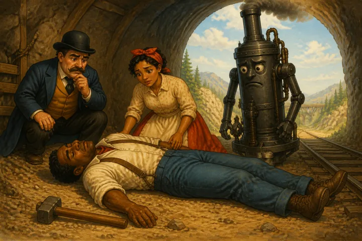
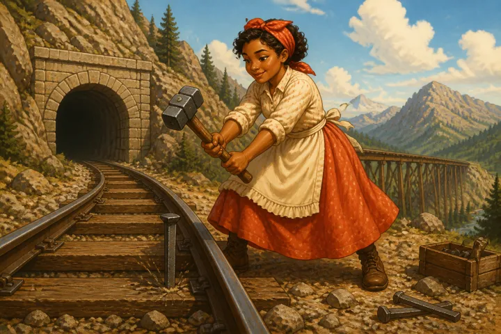

JOHN HENRY: EPIC OF THE NEGRO WORKINGMAN
Left Wing Gordon was and is a very real person, “traveling man” de luxe in the flesh and blood. Not so John Henry, who was most probably a mythical character. Whatever other studies may report, no Negro whom we have questioned in the states of North Carolina, South Carolina and Georgia has ever seen or known of John Henry personally or known any one who has, although it is well understood that he was “mos’ fore-handed steel-drivin’ man in the world.” Still he is none the less real as a vivid picture and example of the good man hero of the race.
Although, like the story of Left Wing, the _John Henry_ ballad carries its own intrinsic merit, this song of the black Paul Bunyan of the Negro workingman is significant for other reasons. It is, first of all, a rare creation of considerable originality, dignity and interest. It provides an excellent study in diffusion, and, as soon as the settings, variations, comparisons, and adaptations have been completed, will deserve a special brochure. For the purposes of this volume, however, we shall present simply the _John Henry_ ballad in the forms and versions heard within the regions of this collection, with some comparative evidence of the workingman’s varied mirror of his hero. John Henry is still growing in reputation and in stature and in favor with the Negro singer, ranging in repute from the ordinary fore-handed steel-driving man to a martyred president of the United States struck down, with the hammer in his hand, by some race assassin. One youth reminiscent of all that he had heard, and minded to make his version complete, set down this:
When John Henry was on his popper’s knee, The dress he wore it was red; And the las’ word he said,
“I gonna die with the hammer in my hand.”
We have found a few Negroes who were not clear in their minds about Booker T. Washington, but we have found none in North Carolina, South Carolina, and Georgia who had not heard something some time about John Henry. In other places, however, in Mississippi and Maryland, for instance, we understand he is not so well known. To trace the story of the ballad to its origin[89] is a difficult task and one awaiting the folk-lorist; but to gather these samples of this sort of nomad ballad is a comparatively easy and always delightful task.
[89] Prof. J. H. Cox traces _John Henry_ to a real person, John Hardy, a Negro who had a reputation in West Virginia as a steel driver and who was hanged for murder in 1894. We are inclined to believe that _John Henry_ was of separate origin and has become mixed with the John Hardy story in West Virginia. We have never found a Negro who knew the song as _John Hardy_, and we have no versions which mention the circumstance of the murder and execution. For Cox’s discussion and several versions of _John Hardy_, see his _Folk-Songs of The South_, pp. 175-188; also _Journal of American Folk-Lore_, vol. 32, p. 505 et seq. Bibliographies will be found in these references.
There are many versions of the common story. Some hold that John Henry’s “captain” made a large wager with the boss of the steel-driving crew that John Henry could beat the steam drill down, and that John Henry did succeed but died with the last stroke of his hammer. Others claim that the wager was John Henry’s own doing and that he never could stand the new-fangled steam contraption. Leastwise he died with the hammer in his hand, some claiming in the mountain drilling stone, others in railroad cuts or tunnels of various roads recently under construction. But in all cases the central theme is the same: John Henry, powerful steel-driving man, races with the steam-drill and dies with the hammer in his hand.
Of the fragments or variations of _John Henry_ there seems to be no end. One at Columbia, South Carolina, sets the standard of conduct as at par with John Henry and affirms that “If I could hammer like John Henry, I’d bro-by, Lawd, I’d bro-by,” which was interpreted to mean the act of passing by the whole procession of steel drivers. An Atlanta version represented John Henry as sitting on his mother’s knee, whereupon she “looked in his face an’ say, ‘John Henry, you’ll be the death o’ me’.” Another fragment from an old timer, self-styled
“full-handed musicianer,” described John Henry as a steel driver who
“always drove the steel” and always “beat the steam drill down,” and added that if he could drill like John Henry he would “beat all the steam drills down.” While most of the versions limited John Henry to steel driving on mountain or railroad, nevertheless there seems to be a general idea that he took turns at being a railroad man, not in the sense of working on the railroad section gangs but as an engineer, perhaps a skilled one. Part of this is the natural story centering around the logical outcome of a railroad man, and part is corruption of the Casey Jones and other noted engineer songs. One opening stanza has it,
John Henry was a little boy, He was leanin’ on his father’s knee, Say, “That big wheel turnin’ on Air Line Road, Will sure be death o’ me,”
while still others thought the K. C. or Frisco or C. & O. roads would be fatal. In the colloquial story, part of which is given later, John Henry usually told his mother and friends, just as did Jagooze and the other railroad men, about his proprietary powers in the noted railroads across the continent. Then there were the references to his firemen and “riders” and the fear of a wreck. Sometimes, as indicative of the changing form, the singer switches off from the standard _John Henry_ lines to some other, like “goin’ up Decatur wid hat in my hand, lookin’ for woman ain’t got no man.”
For the most part, however, the versions are rather consistent. The chief differences have to do with minor details. The main story is always the same. We are now presenting a dozen or more versions of the song, beginning with what may be called the purer or more composite versions and ending with versions that have strayed far from the simple story of John Henry. The first is a common Chapel Hill version, but even that is varied almost as often as it is sung by different groups. In this and the other versions, John Henry’s wife or woman becomes in turn Delia Ann, Lizzie Ann, Polly Ann, or whatever other Ann may be thought of as representing an attractive person. Sometimes John Henry carried her in the “palm of his hand,” as indeed he is also reported to have carried his little son. When a child, John Henry also sat on his father’s knee as well as his mother’s. Sometimes it was seven-, sometimes nine-, sometimes ten-pound hammer that would be the death of him. Sometimes it was the C. & O. tunnel, sometimes steel, sometimes the hammer which was going to bring him down.
JOHN HENRY[90]
A
John Henry was a steel-drivin’ man, Carried his hammer all the time; ’Fore he’d let the steam drill beat him down, Die wid his hammer in his han’, Die wid his hammer in his han’.
John Henry went to the mountain, Beat that steam drill down; Rock was high, po’ John was small,

Well, he laid down his hammer an’ he died, Laid down his hammer an’ he died.
John Henry was a little babe Sittin’ on his daddy’s knee, Said, “Big high tower on C. & O. road Gonna be the death o’ me, Gonna be the death o’ me.”
John Henry had a little girl, Her name was Polly Ann. John was on his bed so low, She drove with his hammer like a man, Drove with his hammer like a man.
[90] The music of this version is given in Chapter XIV. For the music of a version of _John Hardy_, see Campbell and Sharp, _English Folk-Songs From The Southern Appalachians_, p. 87. There is available also a very good phonograph version of _John Henry_.
